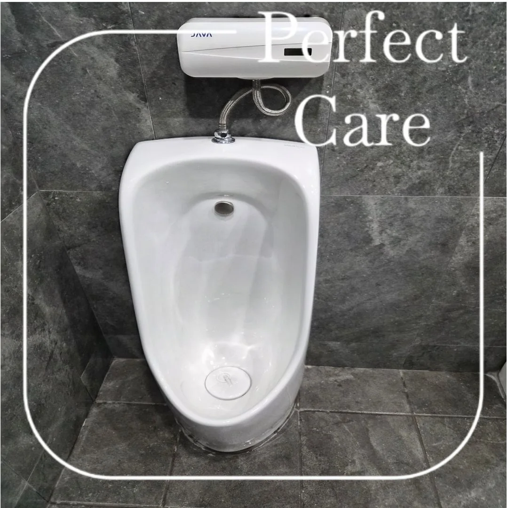
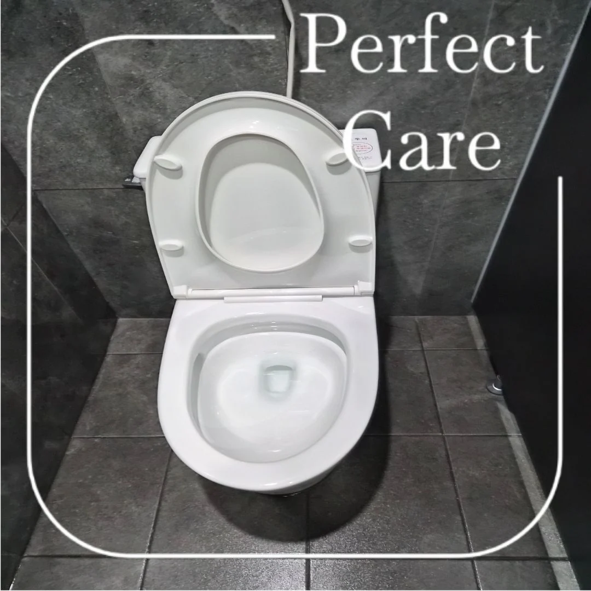
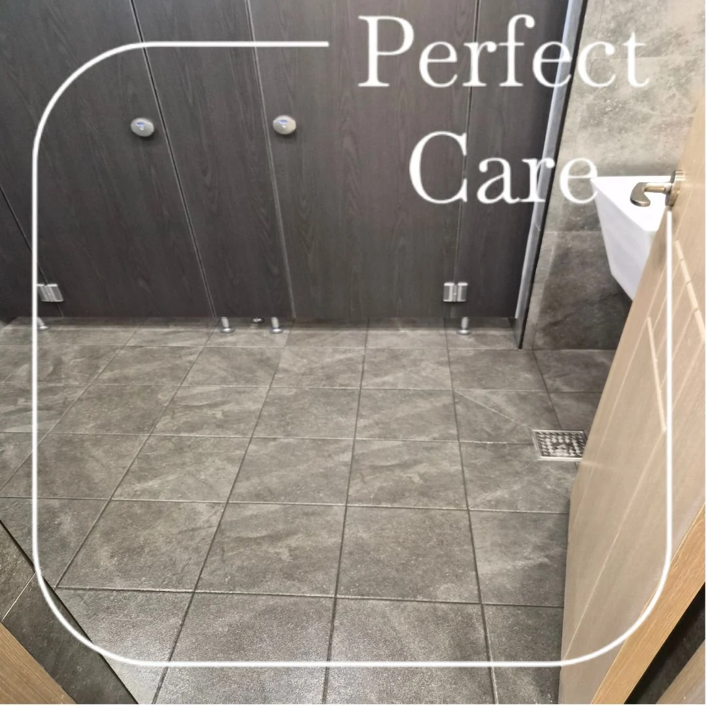
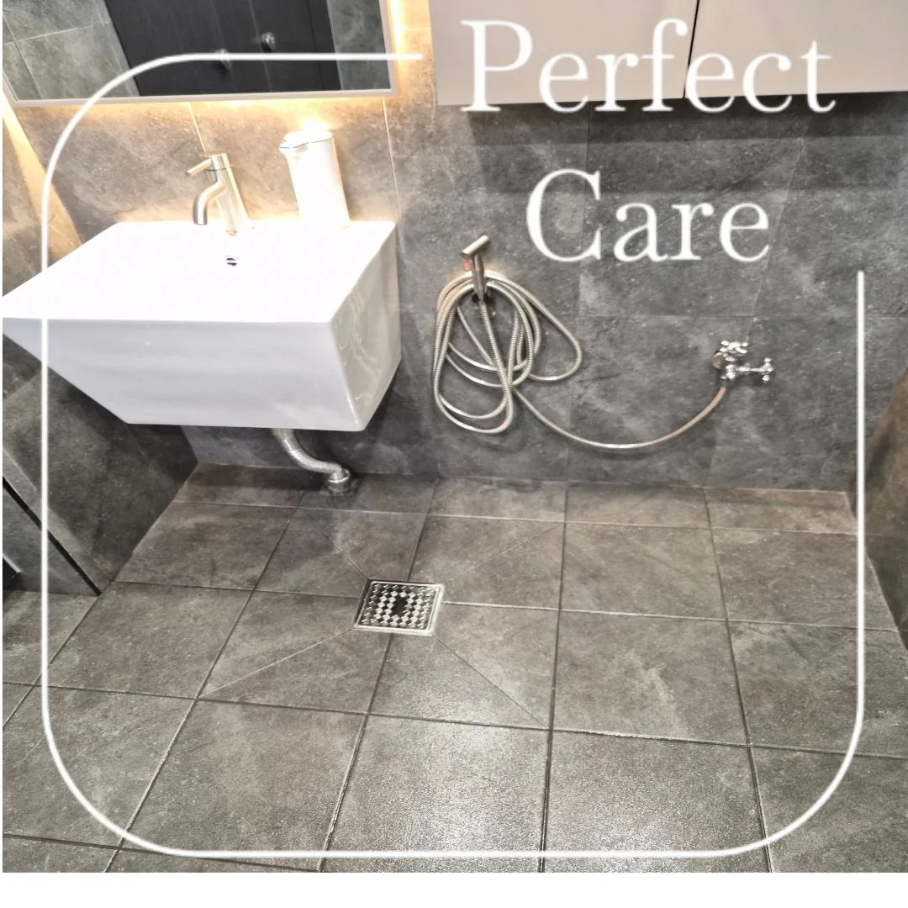
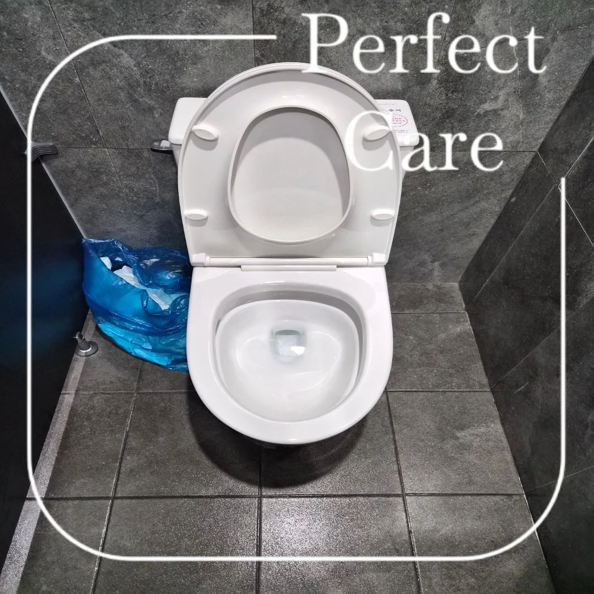
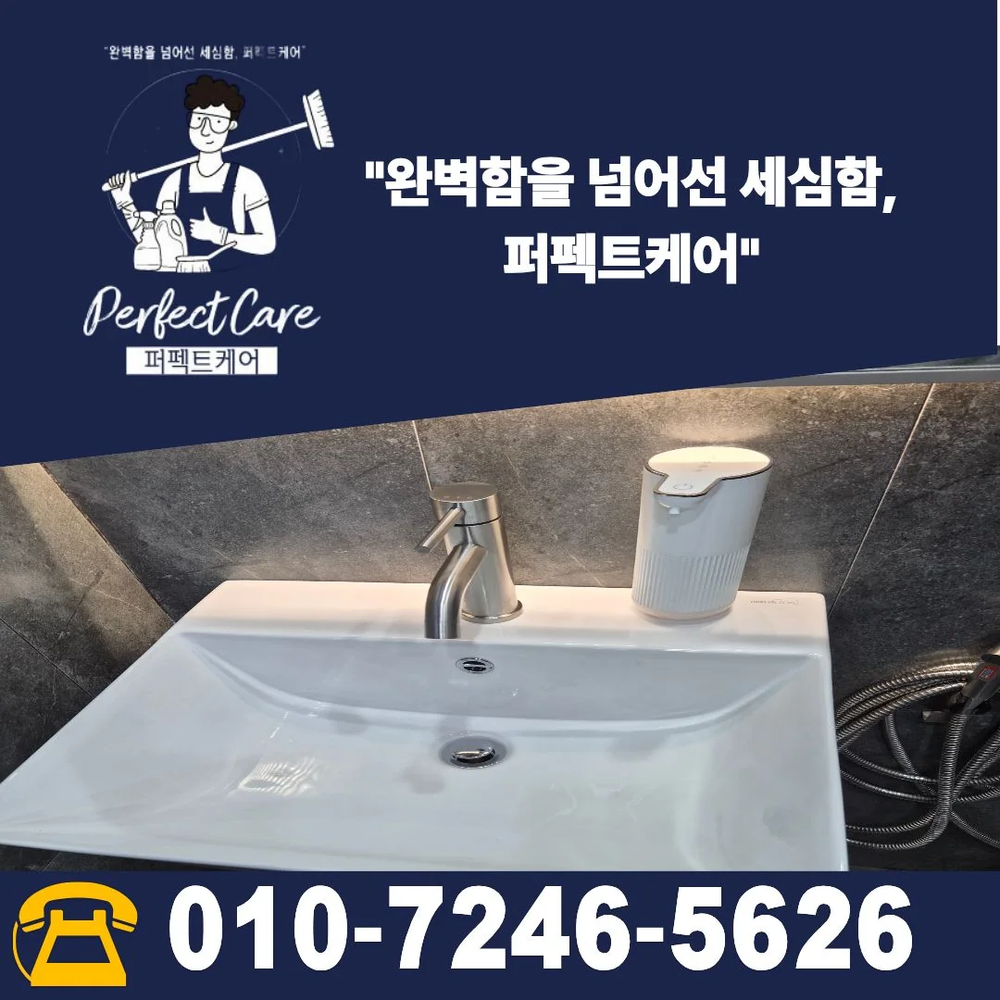

김해주촌화장실정기청소 기업체 공용화장실 관리 현장
김해 주촌에 위치한 기업체 화장실 정기청소 현장입니다. 사업장 화장실은 직원과 방문객이 반복적으로 이용하는 공간인 만큼 한 번의 대청소보다 상태를 주기적으로 확인하고 관리하는 것이 중요합니다. 이번 현장도 실제 이용 공간을 기준으로 소변기, 양변기, 세면대, 바닥과 공용부 상태를 확인하며 정기관리했습니다.

기업체 화장실은 주기적인 관리가 중요합니다
기업체 화장실은 하루 동안 여러 사람이 반복적으로 이용하기 때문에 눈에 띄는 오염이 생긴 뒤에 한 번씩 청소하는 방식보다 일정한 주기로 상태를 확인하는 관리가 더 중요합니다. 특히 바닥과 위생도기 주변은 이용량에 따라 물기와 생활오염이 빠르게 쌓일 수 있어 사업장 운영시간과 이용 인원을 함께 고려해야 합니다.
이번 김해주촌화장실정기청소 현장은 사진에서 확인되는 소변기, 양변기, 세면대, 바닥, 파티션 주변 등 공용화장실의 주요 공간을 중심으로 관리했습니다. 현장 사진에서 확인되지 않는 작업이나 장비는 임의로 추가하지 않고 실제 관리된 공간 위주로 기록합니다.

위생도기뿐 아니라 바닥과 동선도 함께 봅니다
화장실 관리에서는 소변기나 양변기처럼 눈에 잘 띄는 부분만 보는 것이 아니라 출입 동선과 바닥, 배수구 주변, 세면대 앞처럼 사용이 반복되는 공간도 함께 확인해야 합니다. 같은 화장실이라도 직원 수와 방문객 수, 운영시간에 따라 오염이 쌓이는 속도가 달라질 수 있기 때문입니다.


정기청소 주기는 사업장 상황에 맞춰 정합니다
퍼펙트케어의 사업장 정기청소는 주 1회부터 주 6회까지 상담할 수 있습니다. 관리 횟수는 화장실 크기만으로 정하지 않고 사업장 규모, 직원 수, 방문객 수, 운영시간, 화장실 이용량, 바닥 오염 정도, 함께 관리해야 하는 사무실이나 공용공간의 범위 등을 확인한 뒤 결정하는 것이 좋습니다.
이용량이 많은 기업체라면 화장실 상태가 빠르게 달라질 수 있고, 상대적으로 이용량이 적은 사업장은 필요한 횟수와 범위를 조정할 수 있습니다. 현장에 필요한 범위를 기준으로 관리 계획을 세우는 것이 장기적으로 공간을 안정적으로 유지하는 데 도움이 됩니다.

사무실과 화장실처럼 매일 사용하는 공간은 한 번의 청소보다 일정한 관리가 중요합니다. 김해 주촌을 포함한 김해 지역 사업장 정기청소는 공간 규모와 이용량, 관리범위를 확인해 상담합니다.
